Префектура Миэ · Кихоку, Овасэ, Кумано · дорога паломников
Кумано-кодо, дорога Исэдзи: каменная тропа паломников и люди, которые её берегут
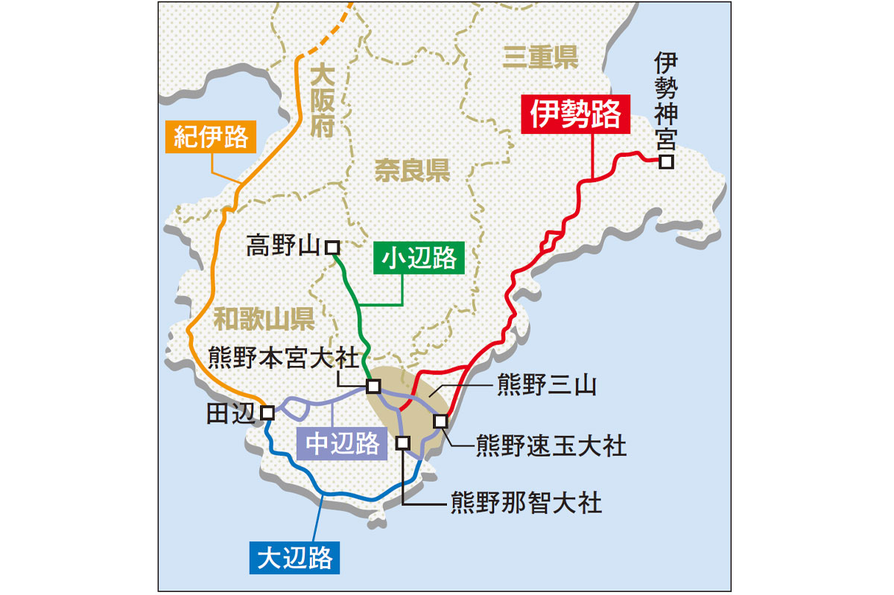
Между святилищем Исэ и тремя великими святилищами Кумано лежит Исэдзи, «дорога молитвы», по которой веками шли паломники. Её каменные мостовые до сих пор чинят вручную, а по сторонам растут кипарисы, из которых делают лучшую древесину страны.
Дорога
Семь раз в Исэ, три раза в Кумано
В Японии есть поговорка: «В Исэ семь раз, в Кумано три раза». Так говорили о человеке глубокой веры. Под Исэ имеется в виду святилище Исэ, а под Кумано три великих святилища Кумано: Кумано Хонгу-тайся, Кумано Хаятама-тайся и Кумано Нати-тайся. Дорога, которая соединяет эти святыни, называется Исэдзи. По ней шли паломники, направлявшиеся из Исэ дальше на юг.
Кумано-кодо это общее имя всех паломнических путей к святилищам Кумано. Кроме Исэдзи, к ним ведут ещё четыре дороги: три начинаются на западе полуострова Кии, в том числе от горного монастыря Коясан, а четвёртая шла из Киото и Осаки. В 2004 году все они вошли во Всемирное наследие ЮНЕСКО. Объектов наследия, которые представляют собой именно дорогу, в мире совсем немного, и пройти по такому пешком особенно интересно.
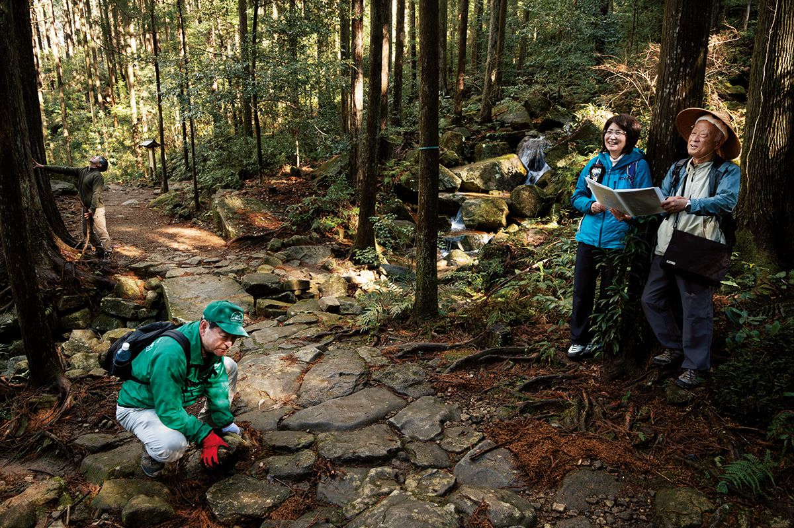
Исэдзи делится на несколько участков, и почти каждый уходит через перевал. Гиды говорят, что в этом и состоит её прелесть: за каждым перевалом открывается новый пейзаж и другая местная жизнь. К тому же рядом течёт тёплое течение Куросио, и даже в горах здесь почти так же тепло, как на равнине.
Перевал
Магосэ: самые красивые камни Исэдзи
Самый популярный участок дороги проходит через перевал Магосэ на границе города Овасэ и посёлка Кихоку, на юге префектуры. Его длина около 5 км. Тропа идёт сквозь густой лес из кипарисов хиноки и папоротников, по замшелым камням, и выглядит почти сказочно.
Мостовая здесь считается самой красивой на всей Исэдзи и тянется длинными участками. На первый взгляд камни уложены как попало, но на деле продумано даже то, как дождевая вода стекает с них в боковые канавки. Вдоль тропы много старых памятников. Среди них «Ёнаки-дзидзо», каменный бодхисаттва, у которого родители просили, чтобы ребёнок перестал плакать по ночам.
Мостовую, по преданию, уложили ещё в период Эдо (1603–1868), и на то была причина. Это один из самых дождливых районов Японии, и после ливня раскисшая дорога становилась непроходимой. До 1917 года тропа через перевал оставалась префектурной дорогой, по ней ходили не только паломники, но и местные жители по своим делам. Камни клали, чтобы по важной дороге можно было идти безопасно в любую погоду, и это до сих пор чувствуешь под ногами.
После дождя мокрые камни особенно красивы, так что ненастье здесь скорее подарок. Маршрут не слишком трудный и подойдёт для обычной пешей прогулки, а вдоль всего пути стоят указатели.
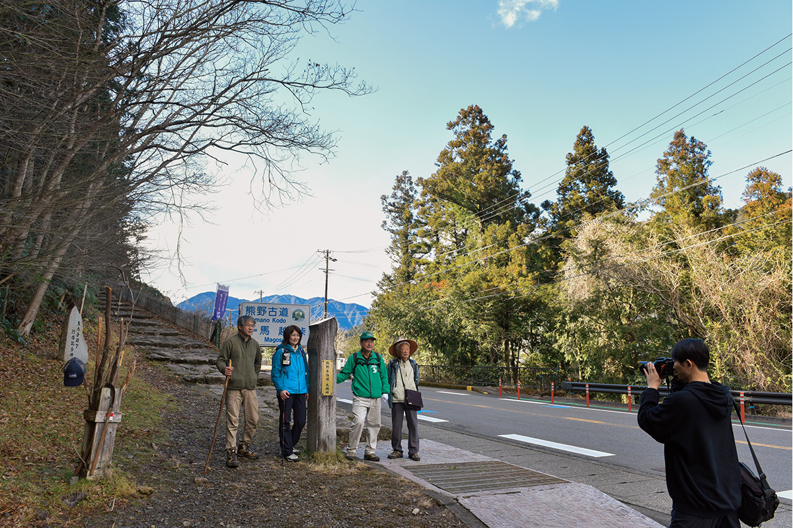
Кумано-кодо, перевал Магосэ
- Адрес
- префектура Миэ, Китамуро, Кихоку, граница с городом Овасэ
- Как добраться
- от станции JR Айга около 30 минут пешком или от станции JR Овасэ около 13 минут на автобусе до остановки Васигэ; на машине около 5 минут от развязки Мияма скоростной дороги Кисэй
Люди
Кто хранит дорогу
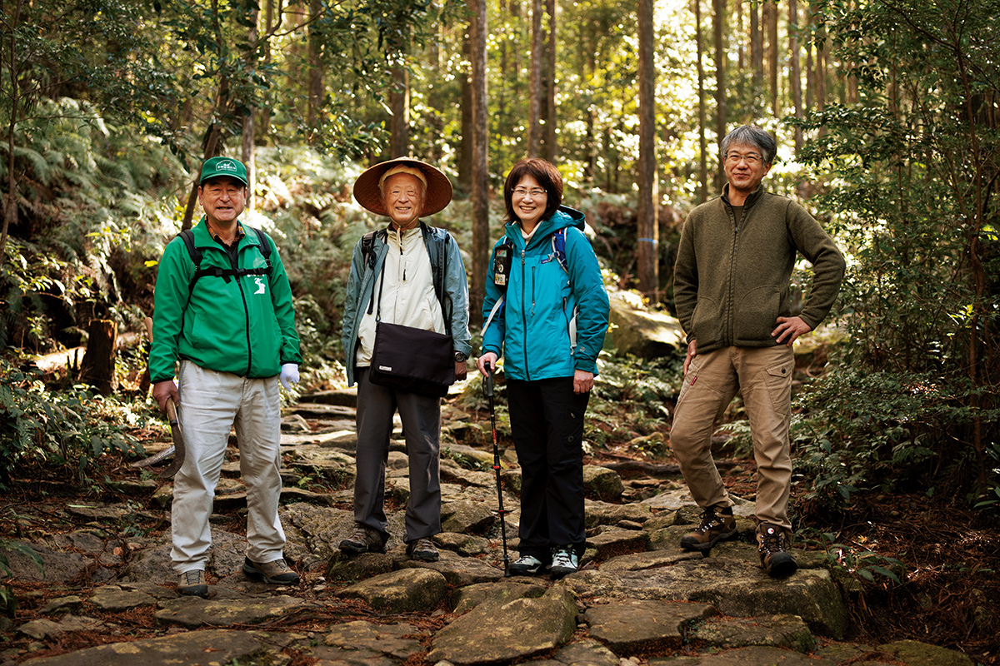
Руководительница компании «Кумано тайкэн кикаку» выросла в Овасэ, уехала и вернулась в родной город. Теперь она водит по Исэдзи небольшие группы и отдельных путников.
«После пандемии среди наших гостей стало ещё больше женщин, которые путешествуют одни. Дальше хотим придумать, как показать красоту Кумано-кодо и тем, кому трудно ходить пешком»
руководительница «Кумано тайкэн кикаку»
Прогулку по дороге наследия делает глубже местный гид-рассказчик, «катарибэ». Один из них водит путников уже 25 лет и по дороге рассказывает истории, связанные с каждым местом.
Чтобы по тропе всегда было удобно идти, за ней постоянно ухаживают. Дожди засыпают камни листвой, после тайфунов на дорогу падают деревья, а иногда кабаны перекапывают землю. Члены общества хранителей тропы из Миямы обходят её раз в месяц и чинят мостовую так, чтобы не менять форму камней. Один из них вырос рядом с тропой, и в детстве она была для него площадкой для игр.
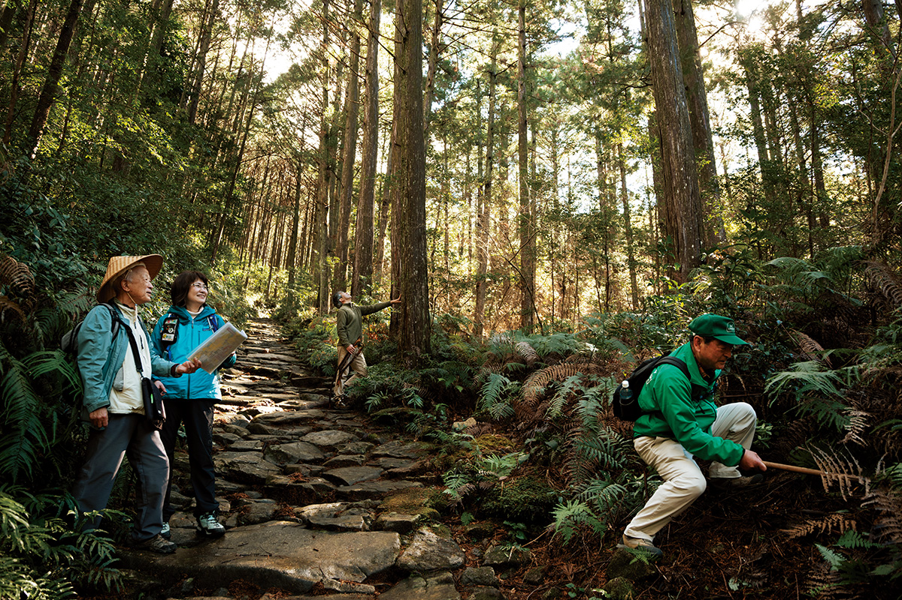
«Беречь камни, которые уложили наши предки, для меня и долг, и радость»
хранитель тропы
С дорогой неразрывно связаны и окрестные леса кипарисов хиноки из Овасэ. Дождей много, склоны крутые, почва бедная, и деревья растут медленно. Зато годичные кольца у них плотные, а древесина прочная и считается одной из лучших. Мастер мастерской «Накаи Мокко» делает из этого кипариса мебель и другие вещи. Его деревянные брелоки «Кумано тайкэн кикаку» дарит участникам своих прогулок на память.
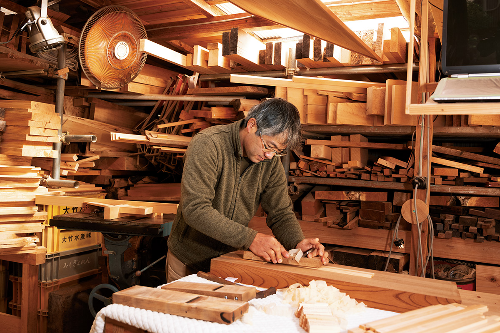
Пейзаж Исэдзи держится на труде многих людей, и руководительница «Кумано тайкэн кикаку» хочет, чтобы путники это видели.
«Мы стремимся к экотуризму: природа, история и культура места сохраняются, только если их понятно рассказывать и ими пользоваться. Пусть путник уходит не просто с мыслью "какой красивый вид". Хочется рассказать, о чём думали и к чему шли паломники прошлого. Пусть это будет живое, человеческое наследие»
руководительница «Кумано тайкэн кикаку»
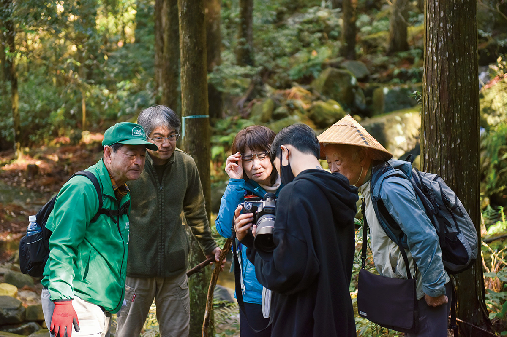
По её словам, до тропы можно добраться и на поездах JR, так что дальний юг префектуры ближе, чем кажется.
Еда
«Хадзиками-тяя Нара»: обед на местных травах
Недалеко от перевала Хадзиками, ещё одного участка Исэдзи, стоит чайный домик «Хадзиками-тяя Нара». Здесь готовят местную кухню по-новому, щедро добавляя лекарственные травы, которые растут в окрестных горах.
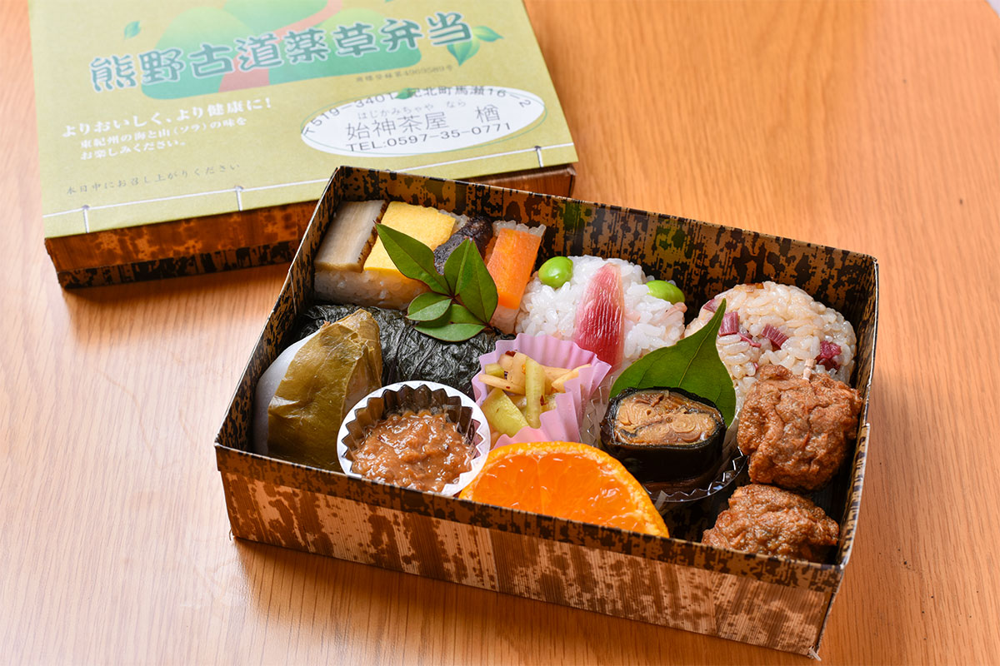
У многих гостей любимое блюдо это обед в коробке «Кумано-кодо якусо бэнто», то есть «обед на травах Кумано-кодо» (1080 иен с налогом в 2021 году, заказать нужно до предыдущего дня). В нём рисовые шарики с маринованными стеблями «куки-дзукэ», особенностью Миямы, и с полуварёным тунцом, прессованные суши, жареные шарики из рыбы окигису и «осасури», сладкие булочки в листьях местной лианы. Есть и обед «Кумано-кодо исидатами бэнто» (735 иен с налогом в 2021 году): угорь-окигису на гриле в нём выложен так, что напоминает каменную мостовую, а все продукты местные. Вкус простой, но глубокий, порции сытные, и такой обед удобно взять на прогулку по тропе.
«Хадзиками-тяя Нара»
- Адрес
- префектура Миэ, Китамуро, Кихоку, Масэ, 16-2
- Телефон
- +81 597-35-0771
- Часы работы
- понедельник, вторник и пятница 17:00–20:00 (последний заказ); суббота, воскресенье и праздники 11:00–14:00 и 17:00–20:00 (последний заказ)
- Выходные
- среда и четверг
Ночлег
«Кии-но Мацусима»: рёкан с рыбой из своего моря
Рёкан «Кии-но Мацусима» стоит в посёлке Кихоку, у ворот восточной части полуострова Кии. Молодая хозяйка знает всё о местной еде, а её муж сам выбирает рыбу, выловленную в море Кумано, и готовит из неё блюда по сезону.
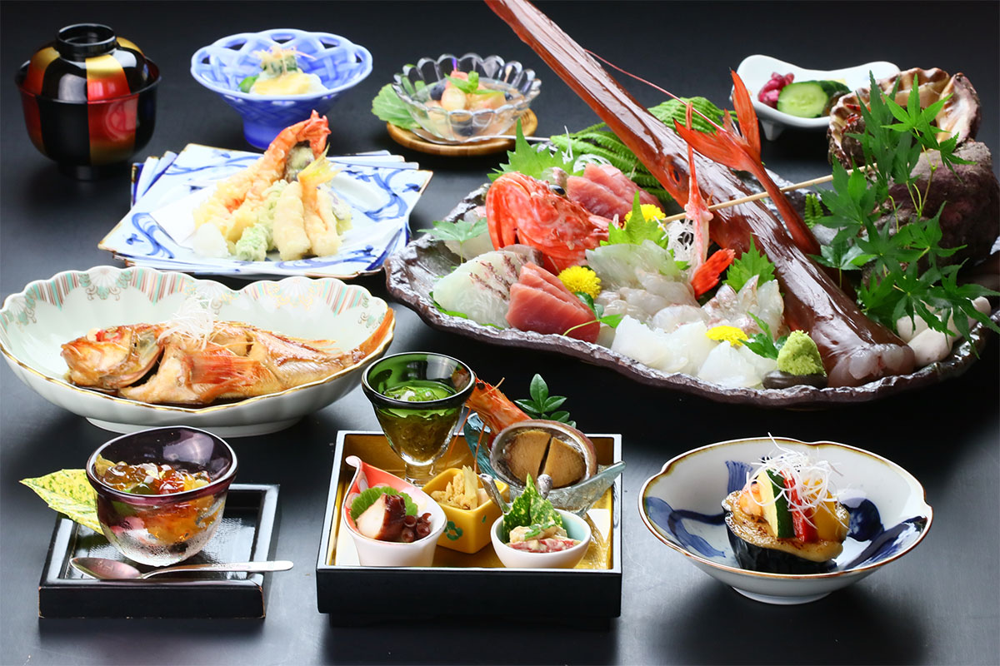
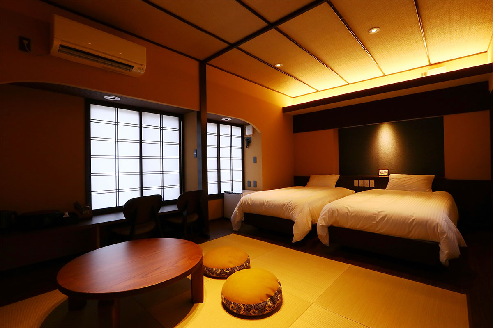
Главное блюдо дома это сябу-сябу из лангуста исэ-эби, его подают с октября по апрель. Остальное время года ужин собирают из дикой рыбы, которую ловят здесь же. Гостей принимают тепло и по-домашнему, и многие возвращаются сюда снова. До Исэдзи можно дойти пешком, поэтому рёкан удобен как ночлег посреди маршрута. В 2020 году его полностью обновили: кроме просторных японских комнат теперь есть современные номера в смешанном стиле. Ночь с ужином и завтраком в 2021 году стоила от 11 000 иен с сервисным сбором.
«Кии-но Мацусима»
- Адрес
- префектура Миэ, Китамуро, Кихоку, Фурусато, 1057
- Телефон
- +81 597-49-3048
- Цены / Вход
- ночь с ужином и завтраком от 11 000 иен (сервисный сбор включён)
Река
Тёси: вода, которую называют чудом
Река Тёси течёт через посёлок Кихоку. Её длина всего 13,76 км. Она начинается на горе Докураяма в массиве Одайгахара высотой 1470 м, одном из самых дождливых мест страны, проходит через горы и остаётся чистой до самого впадения в море Кумано.
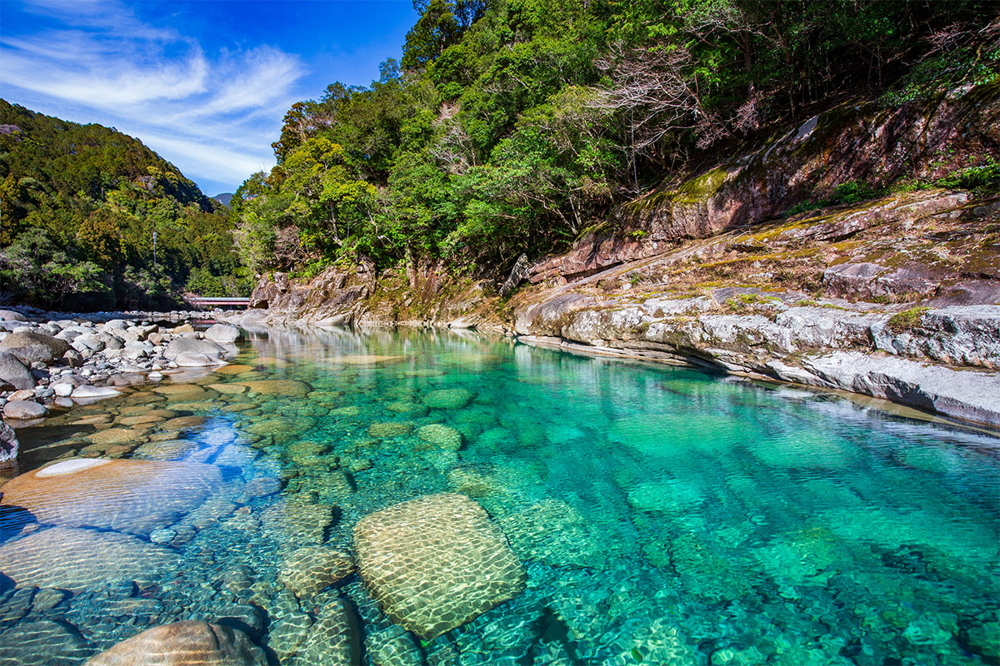
Цвет воды здесь называют «синевой Тёси», а дно видно так ясно, что реку прозвали «чудесной». В ней живут форель аю и амаго, длиннорукие креветки и много других обитателей. Ущелье Уотоби-кэй с огромными скалами летом любят те, кто приезжает купаться и играть у воды.
Река Тёси
- Адрес
- префектура Миэ, Китамуро, Кихоку
- Телефон
- +81 597-46-3555 (туристическая ассоциация Кихоку)
Террасы
Маруяма-сэммайда: около 1340 рисовых полей на склоне
Южнее, в городе Кумано, на юго-западном склоне горы Сиракура лежат рисовые террасы Маруяма-сэммайда. Около 1340 маленьких полей спускаются по склону, и вид с обзорной площадки похож на старую Японию, какой её помнят по картинкам: тихие горы и золотой рис, который качается на ветру.
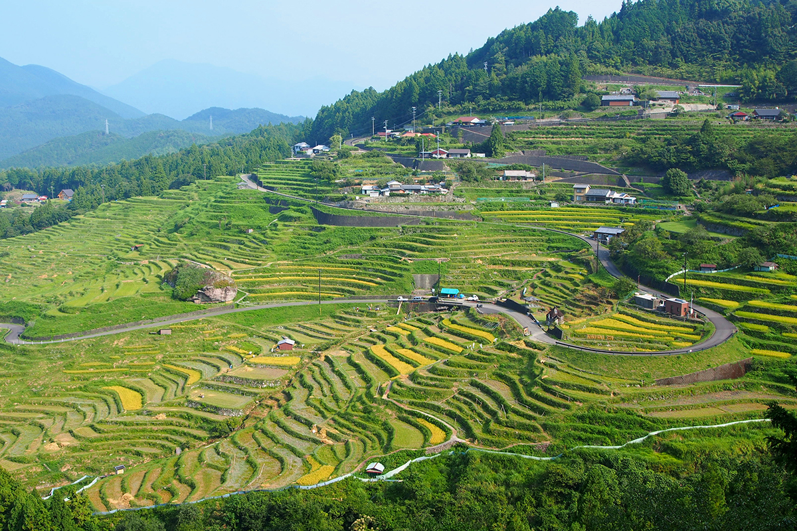
Через террасы проходит дорога длиной 7,7 км, проезд по ней бесплатный и открыт круглый год. Это и обычная дорога для местных жителей, а фонарей на ней нет, так что ездить лучше днём. Лучшее время для поездки лето и осень. После прогулки стоит попробовать местную свинину «Кисю Ивасимидзу».
Рисовые террасы Маруяма-сэммайда
- Адрес
- префектура Миэ, Кумано, Кии-Вада, Маруяма
- Телефон
- +81 597-97-1113 (отдел развития районов мэрии Кумано)
- Как добраться
- около 30 минут на машине от развязки Кумано-Отомари дороги Кумано-Овасэ
Фото: Akane Yamakita.